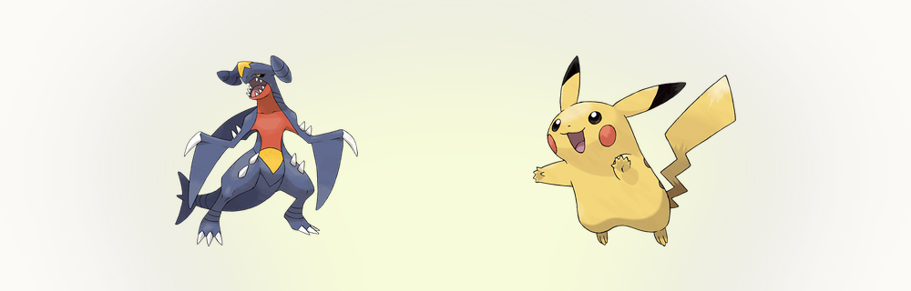
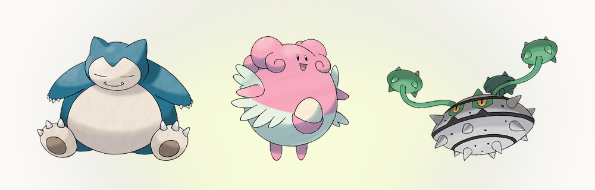

まずはいい知らせから。性格はルビー・サファイアの頃からあって、あれから仕組みが変わっていません。25種類のまま、計算も表もそのままです。つまり一度覚えた知識は古びません。25種類のうち20種類は、どれか1つの数値を10%上げ、別の1つを10%下げます。残る5種類、がんばりや、すなお、まじめ、てれや、きまぐれは無補正で、何も変わりません。上下の対象はHPには及ばず、こうげき、ぼうぎょ、とくこう、とくぼう、素早さのどれかです。詳しい一覧は ポケモン性格表にあるので、まだじっくり見たことがないなら、そのぶんの性能を黙って捨てていることになります。
10%の補正は実際どれくらいか
10%の振れ幅は、数字で見るまで小さく感じます。補正は数値の計算の最後に掛かるので、しっかり育てたレベル50のポケモンなら片側およそ15〜20ポイント。いい性格と悪い性格のあいだに30〜40ポイントの差が出ます。レベル100なら、振り切った数値で30ポイント近くになります。対戦のレベルでは、この差が先手を取れるかどうか、一撃で倒せるかどうかを決めます。努力値1ポイントにこだわる人が性格は平気で見落とすのは、順番が完全に逆なんですよね。 PokemonDBの仕様ページ には、正確な式と性格ごとの数値の振り分けが載っています。引用ではなく検算したいときはこちらをどうぞ。
性格は、そのポケモンが好きな味と嫌いな味も静かに決めています。ソード・シールドのカレー作りなどに顔を出す細かい仕様です。戦闘には関係ありませんが、性格が計算のためだけでなく、性格として設計されたものだということを思い出させてくれます。
まずは原則をひとつ：使わない数値を下げる
性格を選ぶときは、拍子抜けするほど単純な原則から始まります。そのポケモンが一切使わない数値を下げる。それだけです。物理アタッカーはとくこうに振る意味がないので、いじっぱり（こうげき↑・とくこう↓）かようき（素早さ↑・とくこう↓）を選びます。特殊アタッカーはその裏返しで、ひかえめとおくびょうを使い、下がるのはこうげきのほう。下げる数値が元々使わないものなら、上がる分は丸儲けで、失うものは何もありません。この習慣ひとつで直るチームは、表の上のどんな助言より多いはずです。
ガブリアスが教科書的な例です。こうげき130、とくこう80、素早さ102。物理技でがっつり削って、特殊技はほとんど使いません。標準はようき。素早さが上がるのでブーストなしの素早さ100の層を抜けられて、下がるのは元々使っていないとくこうです。いじっぱりは、おいかぜやねばねばネット、先制技で素早さを管理しているチームの定番の代案で、速さを捨てて一撃を重くします。この例は表のFAQでも同じ流れで説明していますし、 Smogonのガブリアス図鑑ページ を見れば、標準的な型と、なぜようきが支持されるのかが分かります。
素早さか、火力か
基本が済んだら、本当の議論が始まります。素早さか、火力か。ようきといじっぱり、おくびょうとひかえめ。対戦をやっている人が何度も繰り返してきた話です。素早さ型が勝つのは、特定の相手との噛み合わせが変わる場面です。先に動けるアタッカーは、攻撃して、反撃を受けずに済みます。火力型が勝つのは、チームがすでに素早さを制しているとき、あるいはダメージが増えたことで2発が1発になるとき。私の目安は「迷ったら速いアタッカーには素早さの性格」で、表の結論も同じです。同速やそれに近い勝負は環境のそこかしこにあり、同速を制するのは無料の価値です。環境が素早さにどれだけ報いているか見たいなら、 r/stunfisk の使用率統計に、その同速で生死が分かれる型がいくつも並んでいます。

受け役とトリックルーム
受け役は話がまるごと逆になります。壁は強いほうの防御を上げます。わんぱく（ぼうぎょ↑・とくこう↓）としんちょう（とくぼう↑・とくこう↓）は、こうげきをまだ使う受け役向け。ずぶとい（ぼうぎょ↑・こうげき↓）とおだやか（とくぼう↑・こうげき↓）は、こうげきを完全に捨てられるサポーター向けです。HPにはどの性格も触れないので、防御を上げることだけが、性格で耐久を伸ばす手段になります。無補正のまま置いてある壁は、唯一の上乗せ手段を捨てていることになります。

トリックルームになると、表は上下ひっくり返ります。TR中は遅いほうが先に動くので、遅いアタッカーはゆうかん（こうげき↑・素早さ↓）やれいせい（とくこう↑・素早さ↓）を積極的に欲しがります。素早さ20のポケモンがゆうかんで個体値を最小まで下げた姿は、ルームが開いているあいだ、環境で一番怖いもののひとつです。のんきとなまいきは、守り寄りのTR要員で同じ役目を果たします。紙の上では遅くて使えないように見えるポケモンに、対戦勢が本気で興奮するのはこのためです。 Bulbapediaの性格の記事 に、仕組みの成り立ちと細かい仕様がまとまっています。ここに書いたことの裏付けが欲しいときの決定版です。
よく使う4つを覚えるより、25種類を一度に並べて見たいなら。ポケモン性格表のページには、上がる数値と下がる数値を1つの表にした一覧と、種族値を読んでおすすめの性格を出す機能があります。
性格が違ったら、直せばいい
欲しかったポケモンを、間違った性格で引いてしまったら。ソード・シールド以降は、やり直さなくて大丈夫です。ミントを使えば、能力の補正を好きな性格のものに書き換えられます。ようきミントを使えば、ステータス画面の表示は元の性格のままでも、動きはようきそのものになります。ソード・シールドではバトルタワーで50BP、スカーレット・バイオレットではBPショップやテラレイドの報酬で手に入ります。どちらにしても、性格の間違いは取り返しのつく問題で、失ったポケモンではありません。ミントは最近の作品でも数少ない、本当に遊びやすい追加要素のひとつで、 Pokemon.com で、自分のソフトがどこまで対応しているか分からないときに公式の情報を確認できます。
流れは単純です。捕まえるか孵化する、性格を見る。違っていたら、そのまま使う（下がる数値が無害なら）、狩りをやり直す、ミントを買う。どれを選ぶにしても、表が頭の中ではなく目の前にあれば判断はずっと楽になります。ポケモン性格表のツールは、まさにそのために作りました。ポケモンを選び、おすすめの性格を見て、レベル50の実数値を確かめられます。実際の型を検算したいなら、 Pokemon Showdown、そして Serebiiの性格一覧 、加えて Pikalytics を見てください。環境がどんな性格を選んでいるか、実際の使用データで分かります。